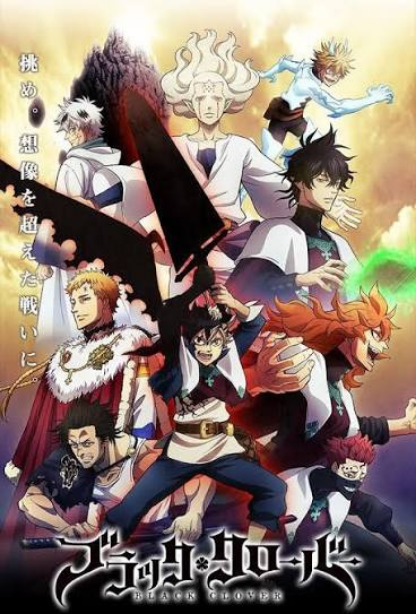

Black Clover é uma série de mangá adolescente do tipo shounen e fantasia japonês, escrita e ilustrada por Yūki Tabata, publicada na revista Weekly Shōnen Jump da editora japonesa Shueisha até agosto de 2023, quando foi transferida para a revista Jump Giga em dezembro do mesmo ano, sendo concluída em maio de 2026.
Personagens favoritos


Arcos favoritos

